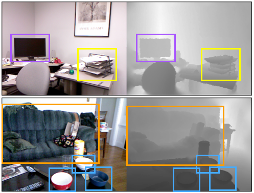

Version 1 of the dataset is available as a zip archive here.
Results that refer to this version are available in the
following publication:
A. Janoch, S. Karayev, Y. Jia, J.T. Barron,
M. Fritz, K. Saenko, T. Darrell. A Category-Level 3-D Object
Dataset: Putting the Kinect to Work. ICCV Workshop on Consumer Depth
Cameras in Computer Vision 2011.

For the first few decades of the field's existence, computer vision has been focused on algorithmic, logical approaches to perception. But it was only with the arrival of the era of large datasets, collected and annotated using the Internet, that truly significant progress has been made in object recognition.
With the recent proliferation of the Microsoft Kinect, we can for the very first time collect an "Internet-sized" dataset of matched color and depth images. We are making this dataset public to hasten progress in the field of robust, cheap, household object recognition.
Made by Sergey Karayev & Allison Janoch.